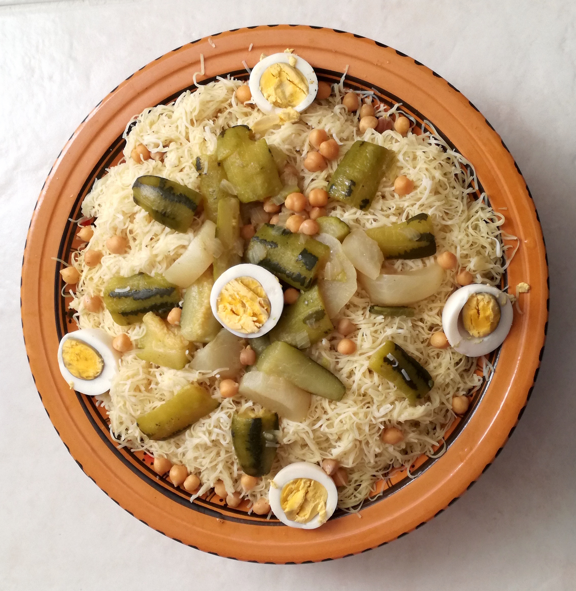

Rechta

Description:
Rechta is a traditional Algerian dish consisting of thin and flat noodles and chicken broth.
The word Reshta comes from the Persian word Rista, which means "thread" and is typically used when referring to pasta.
The world was later Berberized into the common known term "Rechta". It is found in Algeria and Tunisia.
Ingredients:
Ingredients for noodles:
- 500g plain flour
- 1⁄2 teaspoon salt
- Water
- Cornflour, to aid rolling out
- 1 tablespoon ghee (smen)
Ingredients for sauce:
- 1.5kg chicken pieces
- 2 onions, finely chopped
- 1 garlic clove, minced
- 1 tablespoon sunflower oil or 1 tablespoon vegetable oil
- 1 cup of tinned chickpeas
- 1⁄4 teaspoon black pepper
- 2.25 teaspoons ras el hanout spice mix
- 1 liter water
- 1 teaspoon cinnamon
- 500g long turnips, cut into 6ths
- 250g potatoes, quartered
- 250g courgettes, cut into 6ths (zucchini)
- 1.5 teaspoons salt
Steps:
Steps for noodles:
- On a large work surface or in a large bowl, sift the flour. Add the salt and make a well in the centre. Add a little water and mix to form a firm but slightly soft dough.
- Divide the dough into quarters and roll each quarter out to an approximately thickness of 1-2mm on a surface dusted lightly with cornflour.
- Dust dough sheets very lightly and put through the pasta machine on the lowest setting (to create thinnest pasta sheet). When all pieces have been put through the machine, put on the side to dry out a little - for 20-30 minutes.
- Change the setting or add the attachment on the pasta machine to the one that cuts fine ribbons. Pass the sheets through the machine. Dust each sheet with cornflour- this really helps the noodles not to stick together.
- Allow to rest for 10 minutes before steaming in a cousier or regular steamer. Take a tiny amount of oil on your hands and gently rub a little through the rechta to prevent it from sticking together whilst cooking.
- Once the steam rises from the rechta, cook for 5 minutes. Remove from couscousier and sprinkle a little water over it and seperate any noodles. Return to steaming for a further 5 minutes or until noodles are visibly cooked.
- Tip rechta into a gas'a or other large dish and gently mix the ghee (smen) through it. Taste and add extra salt if required.
Steps for sauce:
- In a pressure cooker, fry the onion, garlic and chicken in the oil with the spices, cook for further 10 minutes on medium heat. Add the vegetables and chick peas and pour on the water. Season and cook for 30 minutes or until chicken and vegetables are tender.
- Serve the rechta by placing the rechta noodles in gas'a or large dish (or individually if preferred) and pouring about 1/2 the marga (sauce) over the top. Arrange the vegetables and chicken so everyone gets a good selection.
- Note: (If you're not using a pressure cooker, please cook for approximately 1hr and add the chickpeas during the last 20 minutes of cooking time) Traditionally rechta usually only has turnip in it. My family prefers the above mix of vegetables and sometimes I even add carrots - you can use what you like!
Source: food.com